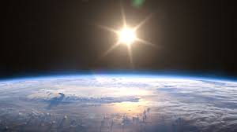
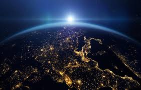
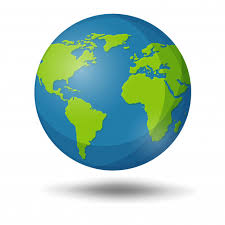

|
|
|
|
| Llamamos Tierra, planeta Tierra o simplemente La Tierra, al planeta en el que habitamos. Es el tercer planeta del sistema solar comenzando a contar desde el Sol, ubicado entre Venus y Marte. Según nuestro conocimiento actual, es el único que alberga vida en todo el sistema solar. |
Su nombre proviene del latín Terra, una deidad romana equivalente a la Gea de los antiguos griegos, asociada con la fertilidad y la fecundidad. Se la conocía popularmente como Tellus mater o Terra mater (madre Tierra), pues de su vientre vendrían todos los seres vivos.
Desde tiempos inmemoriales el ser humano ha soñado con conocer los límites de la Tierra y recorrer todos sus recodos. Antiguas culturas la pensaban infinita, o quizá con un final que sería una caída a los abismos.
|
- Tierra
- Marte
- Venus
- Saturno
- Jupiter
|
Sin embargo, gracias a la ciencia y la tecnología, poseemos actualmente hermosas imágenes de nuestro planeta.
 La Tierra se formó hace alrededor de 4550 millones de años, a partir del material del que se constituyó el resto del sistema solar, que inicialmente era una nube estelar de gases y polvo cósmico. La Tierra se formó hace alrededor de 4550 millones de años, a partir del material del que se constituyó el resto del sistema solar, que inicialmente era una nube estelar de gases y polvo cósmico.
|
|
La formación del planeta tardó entre 10 y 20 millones de años, a medida que su superficie se enfriaba y se acumulaba a su alrededor la nube de gases que hoy es la atmósfera.
|
Eventualmente, a través de un largo período de actividad sísmica y posiblemente debido al impacto constante de meteoros. |
Gracias a ello, el ciclo hidrológico pudo tener inicio, contribuyendo a enfriar el planeta más rápidamente hasta niveles en que la vida pudo tener inicio. |
- Agua
- Fuego
- Tierra
- Aire
- Oxígeno
|
La Tierra es el quinto planeta del sistema solar en cuanto a tamaño, y el único capaz de albergar vida. Posee una forma esférica con un leve achatamiento en los polos, y 12.756 km de diámetro a la altura del Ecuador
|